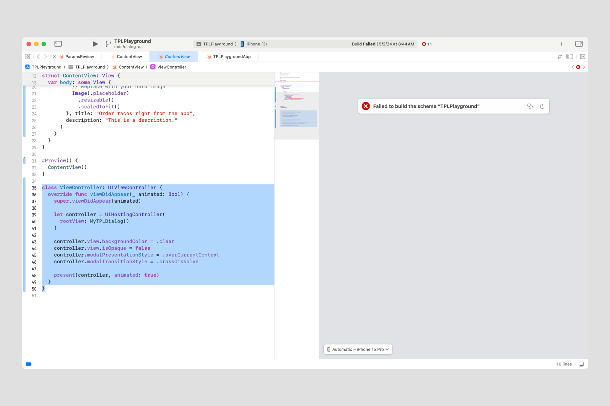
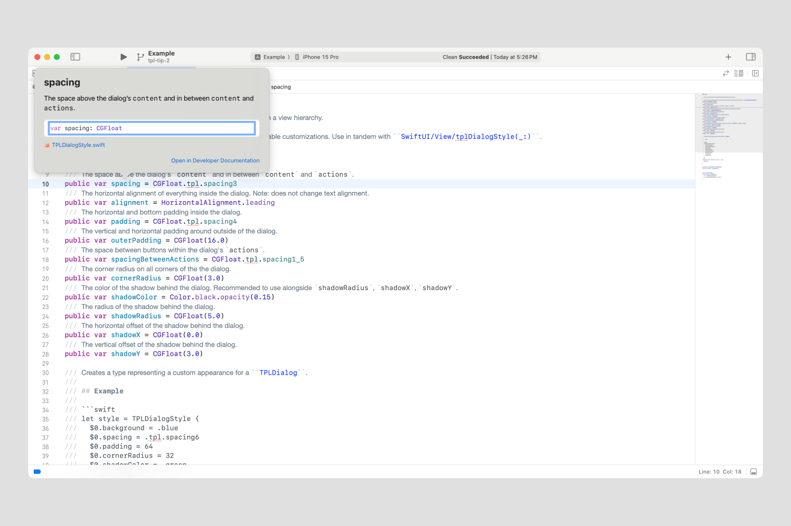
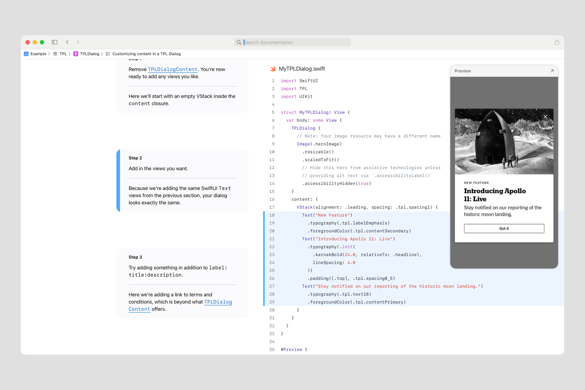
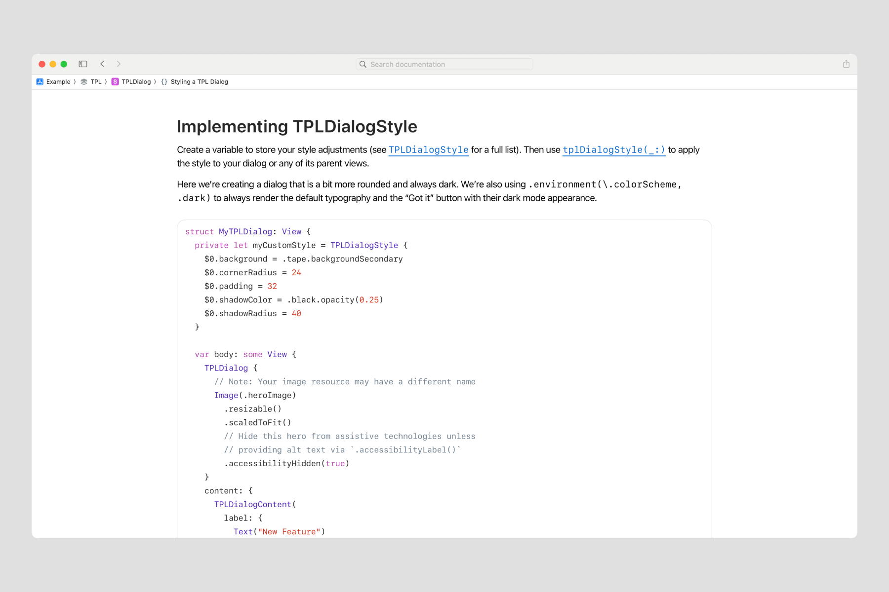
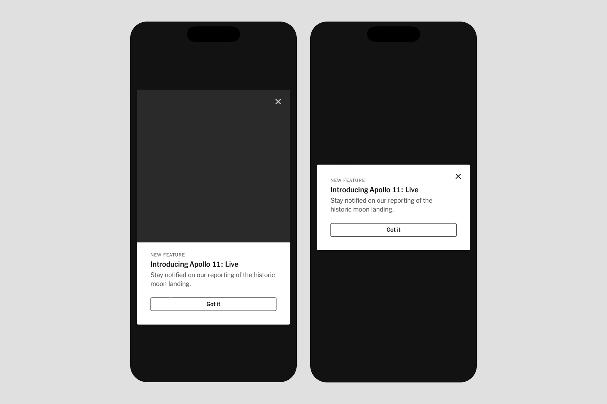

Swift Tales 3
July 2024 — After finishing Menu, the TPL team built a full-screen modal with a scrim and animation used to announce new products or features, called Dialog.
Jaclyn Saik led design. Joseph Kohlmann led engineering. I led a mix of design and engineering. Sergio Cuevas contributed engineering. We completed this work in 3 months.
Called in
Jac asked for my help translating her design vision for Dialog into iOS code. The visuals were mostly done in Figma, Brand was happy with them, and so were the teams who’d likely use Dialog in their work. When I hop into work in progress, my goal is to keep the original driver in the driver's seat.
My responsibility was to be as helpful as possible to Joe and Sergio in building the design. I was able to code typography, color, and spacing independently, polishing Jac's design work. But additionally, I found I was able to contribute in new ways to the coding experience itself.
Hello, UIKit
We found a nice fit with .fullScreenCover, but unfortunately, we couldn’t replace the slide-up animation with a fade-in. Cam Pulsford, principal iOS engineer and guardian angel, recommended we dabble in UIKit.
When Joe would commit a UIKit experiment in GitHub, I’d pull it and see if I could understand it enough to implement it by myself. If I, a junior Swiftie, could figure it out, we’d be in a safe zone for the rest of our engineering customers.
Hello, DocC
By this point in my coding journey, I felt Apple’s own SwiftUI and UIKit docs were sometimes… lacking. Now I had my chance to step to the plate because Dialog’s SwiftUI and UIKit mixture needed thorough explanation. As I mentioned in Swift Tales 1, this was an awesome opportunity to contribute to the polish phase.
Joe trusted me to figure out Apple’s documentation language, DocC. There are four types of DocC documentation I used:
- Source code: In-line code comments marked with three forward slashes (///)
- Tutorials: Step-by-step text and code samples to walk through how to make a Dialog
- Sample code article: A freeform page of text that hosts small bits of code
Through trial and error, I learned that setting up a Dialog was best explained in a tutorial and styling was best explained in a sample code article. Source code comments are extra-special: they offer help for those who prefer to dive into the source code, and they also appear in Xcode's Quick Help.
  Patterns
Joe and I bounced around quite a few ideas for the structure of Dialog’s code. At this point, I learned through my own experiences of using TPL that ergonomics can make it especially enjoyable. But what did our customers prefer in their day-to-day?
To answer that question, I led two usability sessions where we asked iOS engineers to import the iOS-TPL library and try using Dialog in their own codebase. We learned a few important things:
- Many Times engineers are new to SwiftUI, just like us.
- Tutorial documentation was a hit. While great for beginners in SwiftUI, it also worked very well to show how to integrate with UIKit, which is moderately difficult.
- Visual previews in our source code were also very helpful for those who prefer to jump right in.
- Less code tends to feel more ergonomic. For example, trailing closure syntax eliminates the need to declare a parameter.
- Flexibility to pass in views, rather than strings, is expected (this is different from Figma properties, for example).
Summary
We shipped Dialog on time. I led usability testing, and I built the code tutorials and sample code articles. I collaborated with Joe to architect the structure of the component. And I collaborated with Jac to translate design decisions to code.
I learned to connect SwiftUI and UIKit which became very important as I studied more about the varied code bases across the NYT apps. But more about that in a future installment.